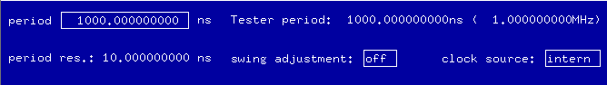

The Period Overlay
The tester period overlay lets you see and set the tester period (entry field period). The units are ns (nano-seconds), and the data are displayed with a precision of up to 9 decimal places.

The tester period overlay lets you see and set the tester period (entry field period). The units are ns (nano-seconds), and the data are displayed with a precision of up to 9 decimal places.
